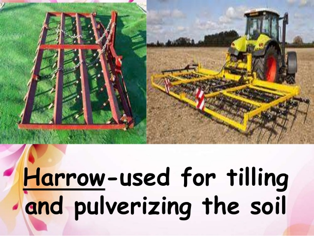

Agriculture
Agriculture World

Farming Tools
Organic Waste
Organic fertilizers are fertilizers derived from animal matter, animal excreta (manure), human excreta, and vegetable matter. (e.g. compost and crop residues). ... In contrast, the majority of fertilizers used in commercial farming are extracted from minerals (e.g., phosphate rock) or produced industrially (e.g., ammonia).We strive to accomplish your goals in how you want your recyclable materials to be handled. We make taking responsibility easy.Paper Collection, Scrap Metal, e-Waste, right through to Food Scraps and Yard Waste. Our goal is to recycle it all. If it is organic we can calm your nerves when dealing with waste that can be recycled or turned into fuel today. Trust that you will be paid extremely competitive prices and done so in a timely manner. Trust that material pick-ups are made when promised. Trust that we will find innovative solutions to resolve your waste and scrap issues. Trust that someone is always here to answer your questions. Someone to trust.(Our goal is to recycle it all)
Organic Production